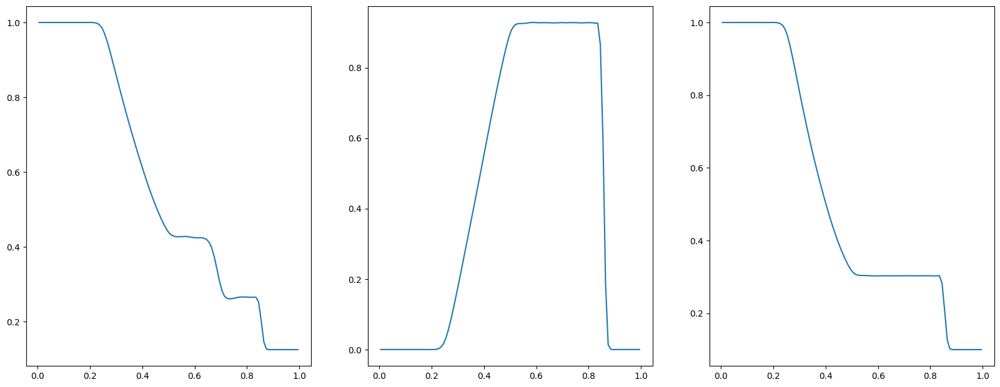

一维Sod激波管¶


本案例要求MindSpore版本 >= 2.0.0调用如下接口: mindspore.jit，mindspore.jit_class。
激波管问题是检验计算流体代码准确性的常见问题。这个案例为一个一维黎曼问题，即理想气体在左右端不同条件下的发展问题。
问题描述¶
Sod激波管问题的定义为:
\[\begin{split}\frac{\partial}{\partial t} \left(\begin{matrix} \rho \\ \rho u \\ E \\\end{matrix} \right) + \frac{\partial}{\partial x} \left(\begin{matrix} \rho u \\ \rho u^2 + p \\ u(E + p) \\\end{matrix} \right) = 0\end{split}\]
\[E = \frac{\rho}{\gamma - 1} + \frac{1}{2}\rho u^2\]
其中，对理想气体， \(\gamma = 1.4\) ，初始条件为：
\[\begin{split}\left(\begin{matrix} \rho \\ u \\ p \\\end{matrix}\right)_{x<0.5} = \left(\begin{matrix} 1.0 \\ 0.0 \\ 1.0 \\\end{matrix}\right), \quad
\left(\begin{matrix} \rho \\ u \\ p \\\end{matrix}\right)_{x>0.5} = \left(\begin{matrix} 0.125 \\ 0.0 \\ 0.1 \\\end{matrix}\right)\end{split}\]
在激波管两端，施加第二类边界条件。
本案例中src包可以在src下载。
[1]:
import mindspore as ms
from mindflow import load_yaml_config, vis_1d
from mindflow import cfd
from mindflow.cfd.runtime import RunTime
from mindflow.cfd.simulator import Simulator
from src.ic import sod_ic_1d
ms.set_context(device_target="GPU", device_id=3)
定义Simulator和RunTime¶
网格、材料、仿真时间、边界条件和数值方法的设置在文件numeric.yaml中。
[2]:
config = load_yaml_config('numeric.yaml')
simulator = Simulator(config)
runtime = RunTime(config['runtime'], simulator.mesh_info, simulator.material)
初始条件¶
根据网格坐标确定初始条件。
[3]:
mesh_x, _, _ = simulator.mesh_info.mesh_xyz()
pri_var = sod_ic_1d(mesh_x)
con_var = cfd.cal_con_var(pri_var, simulator.material)
执行仿真¶
随时间推进执行仿真。
[4]:
while runtime.time_loop(pri_var):
pri_var = cfd.cal_pri_var(con_var, simulator.material)
runtime.compute_timestep(pri_var)
con_var = simulator.integration_step(con_var, runtime.timestep)
runtime.advance()
current time = 0.000000, time step = 0.007606
current time = 0.007606, time step = 0.005488
current time = 0.013094, time step = 0.004744
current time = 0.017838, time step = 0.004501
current time = 0.022339, time step = 0.004338
current time = 0.026678, time step = 0.004293
current time = 0.030971, time step = 0.004268
current time = 0.035239, time step = 0.004198
current time = 0.039436, time step = 0.004157
current time = 0.043593, time step = 0.004150
current time = 0.047742, time step = 0.004075
current time = 0.051818, time step = 0.004087
current time = 0.055905, time step = 0.004056
current time = 0.059962, time step = 0.004031
current time = 0.063993, time step = 0.004021
current time = 0.068014, time step = 0.004048
current time = 0.072062, time step = 0.004039
current time = 0.076101, time step = 0.004016
current time = 0.080117, time step = 0.004049
current time = 0.084166, time step = 0.004053
current time = 0.088218, time step = 0.004045
current time = 0.092264, time step = 0.004053
current time = 0.096317, time step = 0.004062
current time = 0.100378, time step = 0.004065
current time = 0.104443, time step = 0.004068
current time = 0.108511, time step = 0.004072
current time = 0.112583, time step = 0.004075
current time = 0.116658, time step = 0.004077
current time = 0.120735, time step = 0.004080
current time = 0.124815, time step = 0.004081
...
current time = 0.186054, time step = 0.004084
current time = 0.190138, time step = 0.004084
current time = 0.194222, time step = 0.004084
current time = 0.198306, time step = 0.004085
Post Processing¶
您可以对密度、压力、速度进行可视化。
[5]:
pri_var = cfd.cal_pri_var(con_var, simulator.material)
vis_1d(pri_var, 'sod.jpg')
